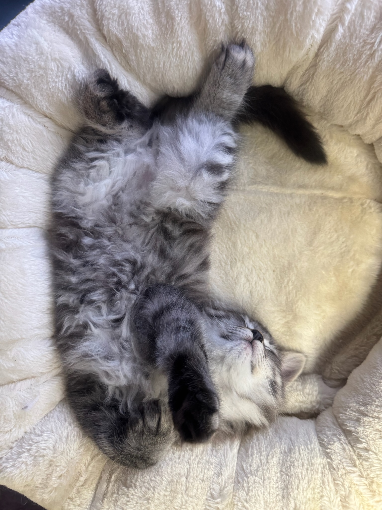
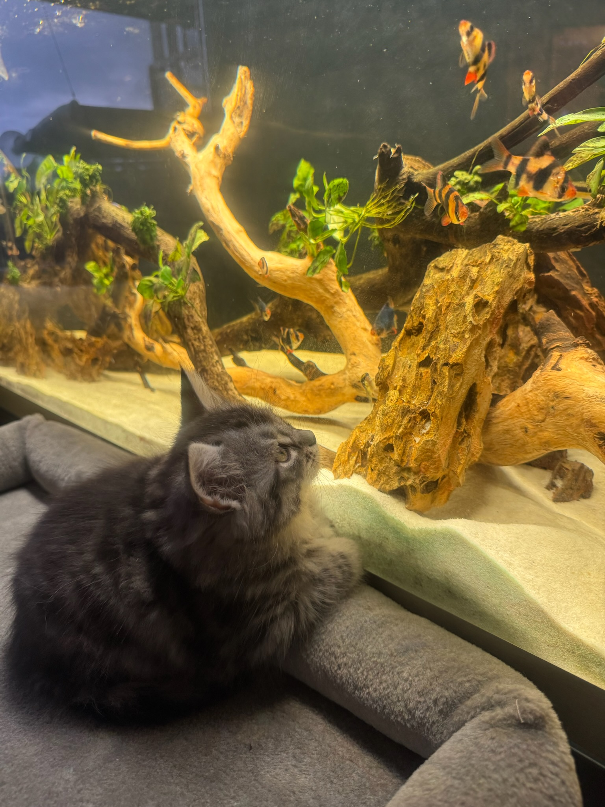
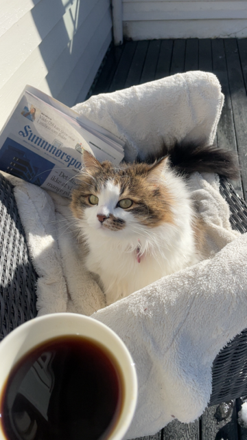
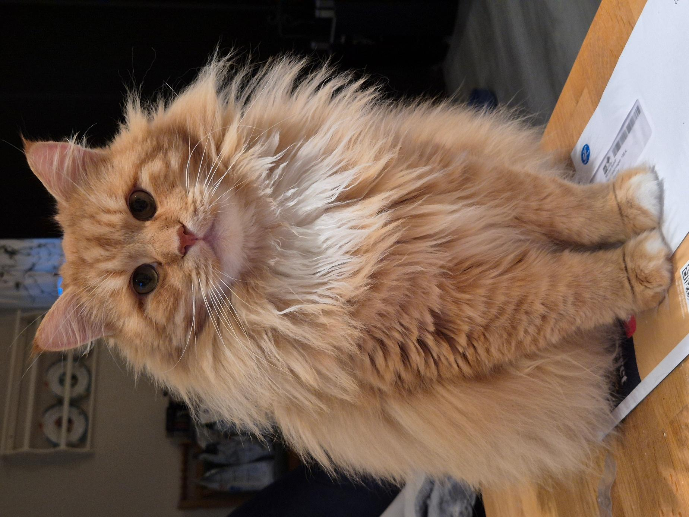
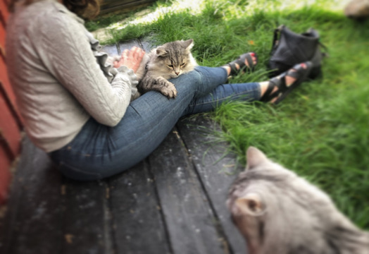
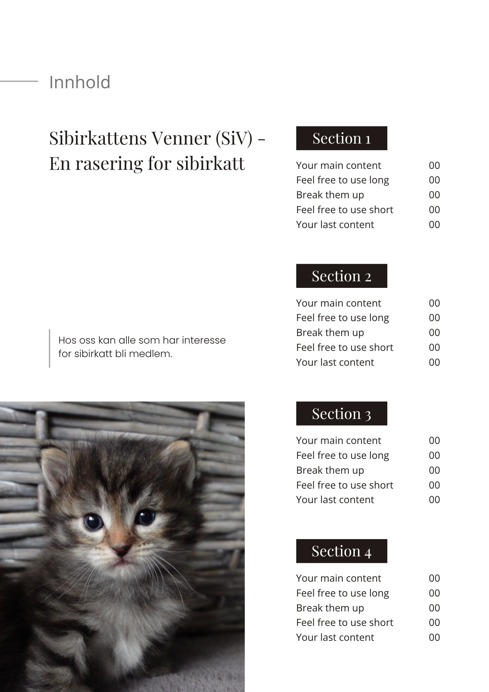

Familieutgaven
Trygge hjem, små poter
En varm og tilgjengelig retning for kattunger, testhjem og medlemmer.
Innhold
Mykere lesning
Mindre "fashion", mer nærhet. Bra hvis Siri ønsker at bladet skal føles lett å lese og hyggelig å dele.
Kattunge til voksen
Den første trygge starten
Det første året legger grunnlaget for resten av kattens liv.

En god oppdretter har allerede håndtert kattungene fra de er små. Kattungene er blitt løftet, kost med, undersøkt og vant til menneskelig kontakt.
Når kattungen flytter hjem til sin nye familie, bør denne treningen fortsette. Målet er ikke at katten skal finne seg i alt, men at den lærer at håndtering er trygt.
Rolige økter, belønning og respekt for kattens tempo gir en voksen sibirkatt som er tryggere ved stell, veterinær og hverdagslige situasjoner.
"Målet er ikke en perfekt katt, men en trygg katt."
Testhjem
Når allergikere får teste først
Testhjemmene gjør rasen tryggere å møte før man tar valget om egen katt.




Medlemsfordeler
Rabatter og samarbeid
En enkel, ryddig side for koder og samarbeidspartnere.
10% i nettbutikken, inkludert salgsvarer.
10% på en rekke varer.
10% på utvalgte varer.
20% på test kit ut 2025.
20% på ordinære priser.
Fast rabatt og gratis levering over 600 kr.